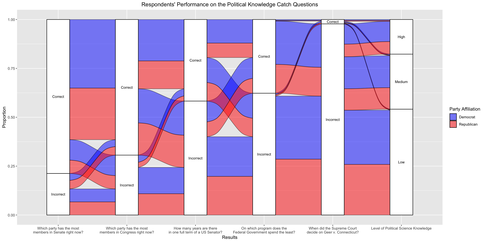
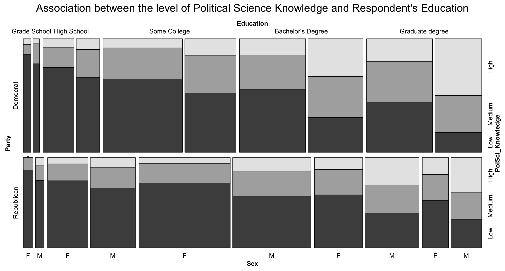
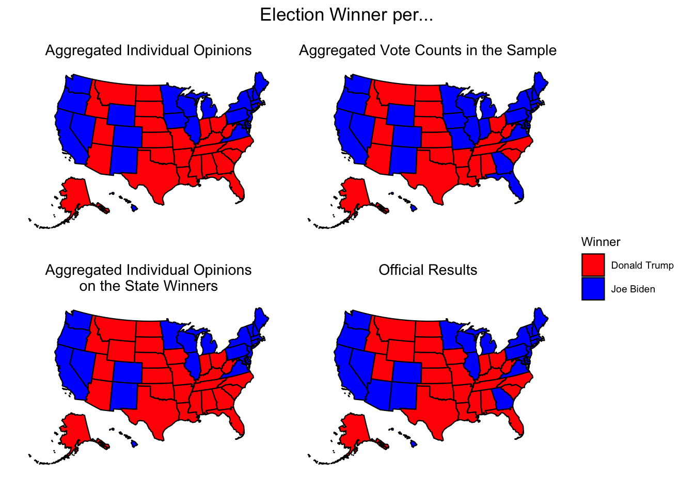
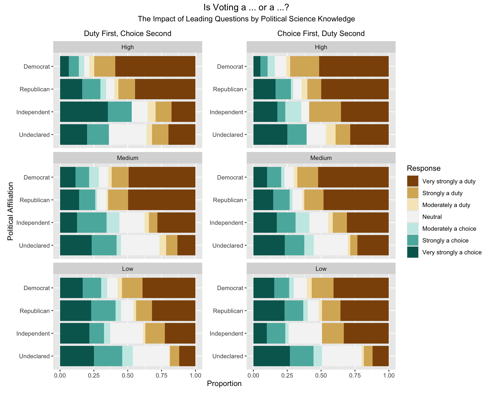
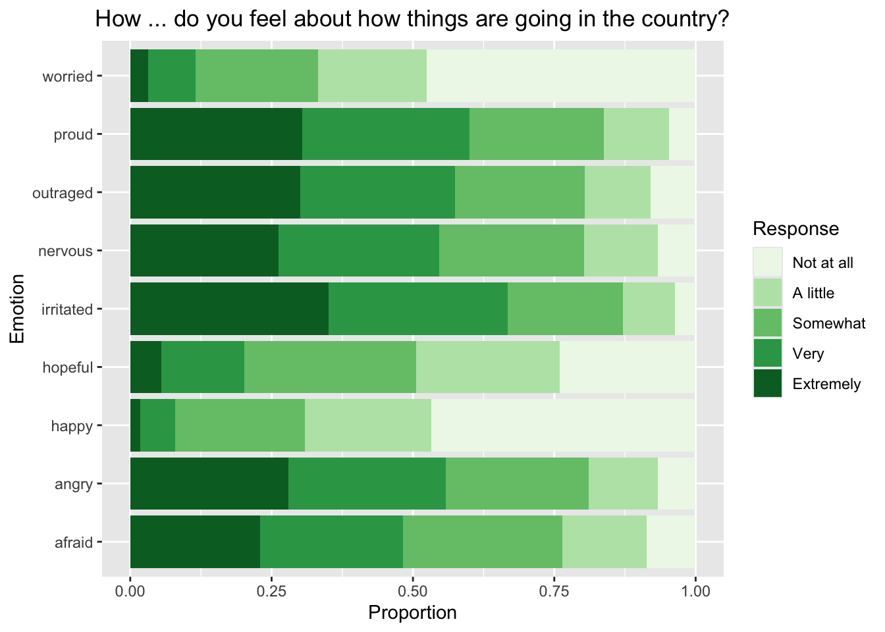
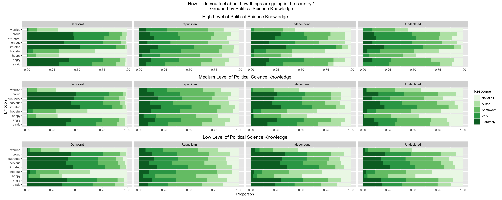
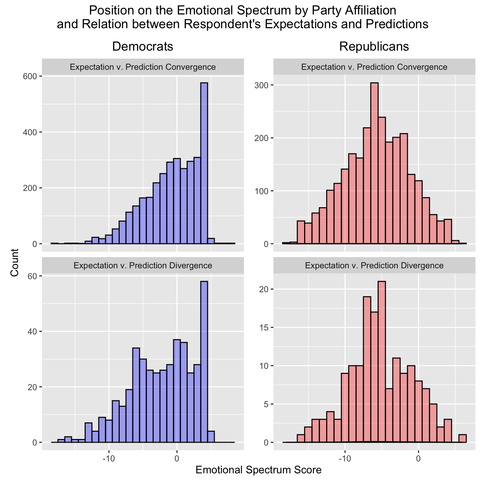
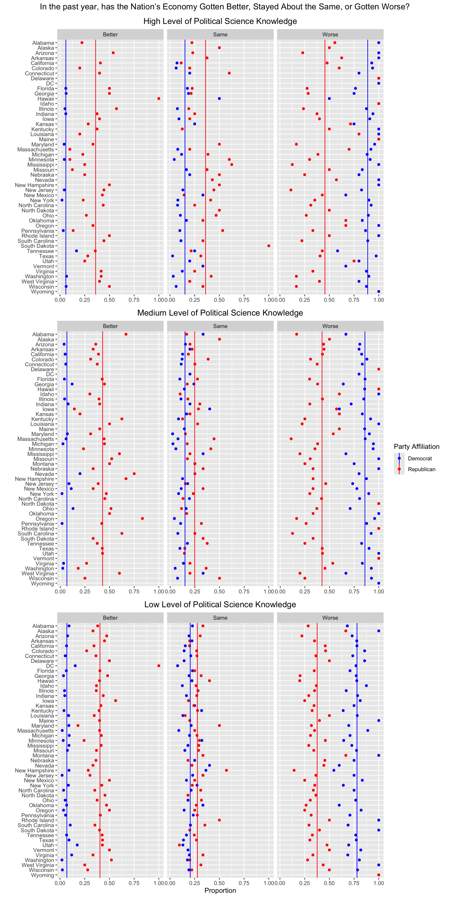

ggplot(alluvials_plot, aes(axis1=V201647, axis2 = V201646, axis3 = V201644, axis4 = V201645, axis5 = V201642, axis6 = PolSciKnow, y = Proportion)) +geom_flow(aes(fill = V201075x), color ='black') +geom_stratum() +geom_text(stat ='stratum', aes(label =paste(after_stat(stratum))), size =3) +scale_x_discrete(limits =c("Which party has the most\nmembers in Senate right now?","Which party has the most\nmembers in Congress right now?","How many years are there\nin one full term of a US Senator?","On which program does the\nFederal Government spend the least?", "When did the Supreme Court\ndecide on Geer v. Connecticut?","Level of Political Science Knowledge"), name ="Results") +labs(title ="Respondents' Performance on the Political Knowledge Catch Questions", fill ="Party Affiliation") +theme(plot.title =element_text(hjust =0.5)) +scale_fill_manual(values =c('Democrat'="blue", 'Republican'="red"))
Warning in to_lodes_form(data = data, axes = axis_ind, discern =
params$discern): Some strata appear at multiple axes.
Warning in to_lodes_form(data = data, axes = axis_ind, discern =
params$discern): Some strata appear at multiple axes.
Warning in to_lodes_form(data = data, axes = axis_ind, discern =
params$discern): Some strata appear at multiple axes.

To start tackling the first research question motivating this project with its search for cases of uninformation in the U.S. elections data, consider this alluvial chart summarizing the respondents’ performance on the five political knowledge catch questions included in the questionnaire. Recall that the “hard” question (corresponding to the “When did the Supreme Court decide on Geer v. Connecticut?”) was the item with the highest proportion of missing value; in other words, respondents were most likely not to answer it. This phenomenon is further emphasized here by the vast majority of respondents, among those who did attempt this question, providing an incorrect answer. Nevertheless, such behavior was expected as one needs to exhibit legal knowledge prowess to know the correct answer!
Alluvia (the horizontal ‘lines’) were colored in a way that tests for the association between the performance on this test and the respondent’s party affiliation. The ordering of questions here does not match the ordering of these questions in the original questionnaire; for the sake of a simplified analysis, questions were organized here by their perceived difficulty according to the recorded answers. Finally, based on the number of correctly answered questions, the respondents fell into one of the categories–High (4 or more correct answers), Medium (exactly 3), or Low (2 or less)–representing their overall level of Political Science Knowledge. These boundaries were chosen in a way that condones missing the very hard Supreme Court question and still making it to the “High” category while necessitating getting all the basics right (i.e., majorities in the House and Senate + length of term of US Senators) to score at the “Medium” level.
As the questionnaire was filled by more respondents affiliated with the Democratic party, it is unsurprising that the proportion of Democrats falling into any category is slightly higher than that of Republicans, achieving the same result. Yet, even when one accounts for this small difference, the biggest disproportion seems to happen between the third and fourth questions at the level of correct answers; here, the proportion of Republicans answering both correctly seems to be much smaller than the proportion of Democrats. This might hint at the higher level of uninformation among Republicans regarding the spending of the Federal Government–an issue that usually ignites the public debate around the elections.
Another problem seems to be revealed by the general performance on the third question, with almost 60% of respondents getting it wrong. In other words, 60% of respondents do not know the length of US senators’ terms even though they are regularly asked to elect these officials into office.
On a separate note, this chart also exhibits the first instances of cheating on the questionnaire. This is illustrated with the small alluvia that manages to get the Supreme Court question correct while not making it exclusively to the High category of Political Science Knowledge. It is extremely unlikely that somebody could correctly provide a year (or guess it) for this judicial case while failing to answer perceivably simpler questions. This could have happened if the person of concern had somehow cheated, e.g., by looking the answer up online.
mosaic(~ Party + Education + Sex + PolSci_Knowledge,data = education,direction =c("h", "v", "v", "h"),highlighting ="PolSci_Knowledge",main ="Association between the level of Political Science Knowledge and Respondent's Education")

To relate the level of Political Science Knowledge to Respondent’s Education, consider this Mosaic Plot which visually tests for the association (correlation) between these two variables. If they were unrelated, the horizontal cuts splitting the bars would happen more or less at the same level throughout the entire plot. Clearly, this is not the case.
The immediate conclusion is that the level of Political Science Knowledge, whose computation was illustrated in the previous chart, is positively correlated with the Respondent’s education; the higher one’s highest attained educational level is, the higher the probability that this person would be classified as having a High level of Political Science Knowledge. Moreover, this approach fixes the problem of unequal proportions of Democrats and Republicans answering the questionnaire that blemished the previous plot. The height of the lightest gray bars corresponding to the High Political Science Knowledge is almost always bigger for Democrats than for Republicans at any given educational level. The structure of the plot also exhibits that while almost half of Democrats attempting the questionnaire hold at least a Bachelor’s degree, the proportion of Republicans with the same qualifications is much smaller.
Generally speaking, there is also such a lightest gray bar difference between males and females with similar levels of education. Interestingly, the proportion of better-educated females with High Political Science Knowledge is almost always the same as the proportion of worse-educated males with High Political Science Knowledge up until the completion of undergraduate studies, where one extra attained level of education does not allow females to catch up with males in terms of their Political Science Knowledge. This is represented by the big jumps between F and M categories belonging to different Education levels (considered exactly in the order presented in this sentence) that start becoming prevalent from Bachelor’s degree onward. Unfortunately, such a trend hints at a sex-driven uninformation bias.
Moving forward, the results illustrated in this Mosaic Plot suggest that it might be worth focusing on the level of Respondents’ Political Science Knowledge rather than just their highest level of attained education to uncover more data trends. The proportion of Respondents with university degrees not being able to correctly answer basic questions on the US government is simply too high to believe that a higher level of education might proof a given Respondent from uninformation. In other words, and quite sadly, there is no one-to-one mapping between a university degree and at least a basic (medium or high) level of knowledge of US politics.
3.2 Who is the best informed then, if not the university-educated ones?
S <-plot_usmap(data = state_winners_S, values ="Winner") +scale_fill_manual(values =c("Donald Trump"="red", "Joe Biden"="blue"), # Set fill colorsname ="Winner" ) +labs(title ="Aggregated Individual Opinions", ) +theme(plot.title =element_text(hjust =0.5), legend.position ="right")O <-plot_usmap(data = state_winners_O, values ="Winner") +scale_fill_manual(values =c("Donald Trump"="red", "Joe Biden"="blue"), # Set fill colorsname ="Winner" ) +labs(title ="Aggregated Individual Opinions\non the State Winners", ) +theme(plot.title =element_text(hjust =0.5), legend.position ="right")V <-plot_usmap(data = state_winners_V, values ="Winner") +scale_fill_manual(values =c("Donald Trump"="red", "Joe Biden"="blue"), # Set fill colorsname ="Winner" ) +labs(title ="Aggregated Vote Counts in the Sample", ) +theme(plot.title =element_text(hjust =0.5), legend.position ="right")A <-plot_usmap(data = state_winners_A, values ="Winner") +scale_fill_manual(values =c("Donald Trump"="red", "Joe Biden"="blue"), # Set fill colorsname ="Winner" ) +labs(title ="Official Results", ) +theme(plot.title =element_text(hjust =0.5), legend.position ="right")(S + V) / (O + A) +plot_layout(guides ="collect") +plot_annotation(title ="Election Winner per...") &theme(plot.title =element_text(hjust =0.5))

These four maps call the 2020 Presidential Election race based on:
Aggregated Individual Opinions, i.e., the winner is called based on what most Respondents think about who the winner will be nationally.
Aggregated Vote Counts in the Sample, i.e., the winner is called based on the most prevalent political affiliation of Respondents per state.
Aggregated Individual Opinions on the State Winners, i.e., the winner is called based on what the majority of Respondents think about who the winner will be on the state level.
Official Results, i.e., the actual results of the 2020 Presidential Election race, which were NOT available at the time when Respondents attempted this survey.
Now, if these maps were to be ordered in terms of predictive power, the least powerful would be just choosing the winner based on the political affiliation of the majority of Respondents attempting the questionnaire in a given state, followed by the aggregated opinions on the winner at the national level, and topped with the aggregated opinions on the winner at the state level. This ordering can be constructed based on the number of states that are called incorrectly in relation to the actual winner depicted on the bottom-right map. Somehow, the survey was answered predominantly by Democrats in the Mid-West region, which tipped the scales in favor of Joe Biden in states where it should not have (top-right map), while some of these did not believe in Joe Biden’s win at the country level (top-left map). Nevertheless, when asked about who the winner will be locally, the problem of Mid-West is resolved, Rhode Island turns blue while Florida and Wyoming turn red, and only Arizona and Georgia–the two closest races–are still incorrectly called.
Conclusion: trust your gut feelings about your neighbors. You might be the most informed and unbiased on who those around you might be like, which, if aggregated, becomes extremely powerful in terms of predictive power.
3.3 What about the strength of the constitution … of Respondents’ decisions? Or, how influenceable are the Respondents?
Code
voting_cd_1 <- alluvials |> dplyr::select(V200001, V201075x, PolSciKnow)voting_cd_2 <- df |> dplyr::select(V200001, V201221, V201222, V201225x)voting_cd <-full_join(voting_cd_1, voting_cd_2, by ="V200001")voting_cd <- voting_cd |>filter(V201221 !=-9)voting_cd <- voting_cd |>mutate(V201221 =ifelse(V201221 ==1, "Mainly a duty",ifelse(V201221 ==2, "Mainly a choice",ifelse(V201221 ==3, "Neither a duty nor a choice", 0))))voting_cd <- voting_cd |>filter(V201222 !=-9)voting_cd <- voting_cd |>mutate(V201222 =ifelse(V201222 ==1, "Mainly a choice",ifelse(V201222 ==2, "Mainly a duty",ifelse(V201222 ==3, "Neither a duty nor a choice", 0))))voting_cd <- voting_cd |>filter(V201225x !=-2)voting_cd <- voting_cd |>mutate(V201225x =ifelse(V201225x ==1, "Very strongly a duty",ifelse(V201225x ==2, "Strongly a duty",ifelse(V201225x ==3, "Moderately a duty",ifelse(V201225x ==4, "Neutral",ifelse(V201225x ==5, "Moderately a choice",ifelse(V201225x ==6, "Strongly a choice", "Very strongly a choice")))))))voting_cd$V201225x <-factor(voting_cd$V201225x, levels =c("Very strongly a duty","Strongly a duty","Moderately a duty","Neutral","Moderately a choice","Strongly a choice", "Very strongly a choice"))voting_cd <- voting_cd |>mutate(V201075x =ifelse(V201075x =="Inapplicable", "Undeclared", V201075x))voting_cd$V201075x <-factor(voting_cd$V201075x, levels =c("Undeclared", "Independent", "Republican","Democrat"))voting_cd$PolSciKnow <-factor(voting_cd$PolSciKnow, levels =c("High", "Medium", "Low"))voting_cd_group1 <- voting_cd |>filter(V201221 !=0)voting_cd_group1 <- voting_cd_group1 |> dplyr::select(V200001, V201075x, PolSciKnow, V201221, V201225x)voting_cd_group2 <- voting_cd |>filter(V201222 !=0)voting_cd_group2 <- voting_cd_group2 |> dplyr::select(V200001, V201075x, PolSciKnow, V201222, V201225x)
Code
diverging_colors_7 <-brewer.pal(7, "BrBG")dfcs <-ggplot(voting_cd_group1, aes(x = V201075x, fill=V201225x)) +geom_bar(position ="fill") +facet_wrap(~PolSciKnow, ncol =1) +scale_fill_manual(values = diverging_colors_7) +labs(subtitle="Duty First, Choice Second", fill ="Response") +theme(plot.subtitle =element_text(hjust =0.5)) +coord_flip()cfds <-ggplot(voting_cd_group2, aes(x = V201075x, fill=V201225x)) +geom_bar(position ="fill") +facet_wrap(~PolSciKnow, ncol=1) +scale_fill_manual(values = diverging_colors_7) +labs(subtitle="Choice First, Duty Second", fill ="Response") +theme(plot.subtitle =element_text(hjust =0.5)) +coord_flip()(dfcs + cfds) +plot_layout(guides ="collect", axis_title="collect") +plot_annotation(title ="Is Voting a ... or a ...?", subtitle ="The Impact of Leading Questions by Political Science Knowledge") &labs(x ="Political Affiliation", y ="Proportion") &theme(plot.title =element_text(hjust =0.5), plot.subtitle =element_text(hjust =0.5))

On several occasions the questionnaire was equally spliced into two different versions so as to test for the impact of the so-called leading question on the Respondents’ answers. In social sciences, leading questions arise when an inherent ordering associated with a question suggests the answer (usually the one appearing first), which is directly linked to the reading direction in a given language (i.e., as in English, one reads left to right, the part of the question to the leftmost of the sentence is hypothesized to be the most suggestive of the answer). Here, consider an example of a leading question on the nature of voting.
Unsurprisingly, most Americans believe that voting is a duty (hues of brown). Nevertheless, these results are inconsistent when faceted by the ordering (total length of brown bars on the left compared to the right), which suggests that the structure of a question did have an impact on the Respondent’s answer, even when one controls for the level of Political Science Knowledge. For example, Democrats with a High level of Political Science Knowledge were less likely to consider voting a duty if “choice” appeared first in the question. Republicans in the same category were more consistent. At the same time, Independents and Undeclared were more likely to be equally split between the two options, but as there were significantly fewer individuals falling into either of these groups, the general results are not as robust as they are for the main two parties.
Respondents with a Medium or Low level of Political Science Knowledge seem to consider voting less of a duty and more of a choice, which is consistent with the assumption that education might make one more politically inclined (which was also illustrated in the Mosaic Plot before). Interestingly, while it still persists, the impact of the leading question was less pronounced in these two groups, which is generally not what one would have expected. A possible explanation is that people falling into the High Political Science Knowledge group might have been overthinking the answer, with a decision being eventually implicitly influenced by the ordering of terms in the question, while those with Medium or Low levels answered whatever they thought of first, with questionnaire’s “persuasive technique” not getting enough time to start working out.
ggplot(emotions_long, aes(x = Emotion, fill = Strength)) +geom_bar(position ="fill") +scale_fill_manual(values = gradual_colors) +labs(title="How ... do you feel about how things are going in the country?",fill ="Response", y ="Proportion") +theme(plot.title =element_text(hjust =0.5)) +coord_flip()

Heated elections are almost guaranteed to translate directly to emotional choices. Consider first the general distribution of emotions in the population of Respondents who have attempted the questionnaire. The two most striking conclusions are that there are not many people who were either extremely worried or extremely happy about how things were going in the United States before the 2020 elections, which might have reflected the “business as usual” attitude. Almost any other emotion (except for hopeful) represented a roughly equal split among all the possible response categories. Were people falling into any of these groups predicting what would happen in November 2020?
Code
emotions_long_high <- emotions_long |>filter(PolSciKnow =="High")high <-ggplot(emotions_long_high, aes(x = Emotion, fill = Strength)) +geom_bar(position ="fill") +facet_wrap(~V201075x, nrow=1) +scale_fill_manual(values = gradual_colors) +labs(title ="High Level of Political Science Knowledge", fill ="Response", y ="Proportion") +theme(plot.title =element_text(hjust =0.5)) +coord_flip()emotions_long_mid <- emotions_long |>filter(PolSciKnow =="Medium")mid <-ggplot(emotions_long_mid, aes(x = Emotion, fill = Strength)) +geom_bar(position ="fill") +facet_wrap(~V201075x, nrow=1) +scale_fill_manual(values = gradual_colors) +labs(title ="Medium Level of Political Science Knowledge", fill ="Response", y ="Proportion") +theme(plot.title =element_text(hjust =0.5)) +coord_flip()emotions_long_low <- emotions_long |>filter(PolSciKnow =="Low")low <-ggplot(emotions_long_low, aes(x = Emotion, fill = Strength)) +geom_bar(position ="fill") +facet_wrap(~V201075x, nrow=1) +scale_fill_manual(values = gradual_colors) +labs(title ="Low Level of Political Science Knowledge", fill ="Response", y ="Proportion") +theme(plot.title =element_text(hjust =0.5)) +coord_flip()(high / mid / low) +plot_layout(guides ="collect", axis_title="collect") +plot_annotation(title ="How ... do you feel about how things are going in the country?\n Grouped by Political Science Knowledge") &labs(x ="Emotion", y ="Proportion") &theme(plot.title =element_text(hjust =0.5))

It is very much possible! The number of High Political Science Knowledge Democrats being extremely worried was significantly smaller than that of High Political Science Knowledge Republicans exhibiting extreme worry. Did they know that Joe Biden was to be the call as the winner? Unfortunately, this cannot be inferred, but compared to the proportion of Democrats expressing extreme happiness or hopefulness, the proportion of extreme worry does not seem to be awry, especially when compared to the general distributions in the previous graph. Nevertheless, Democrats were much more likely to express negative emotions (nervous, irritated, outraged) compared to Republicans, who seemed to have been more toned in all categories. In other words, while there might have been a light at the end of the tunnel (or the campaign), High Political Science Knowledge Democrats were prevalently dissatisfied with how things were going in the country compared to the same group of Republicans.
For those falling into the Medium or Low Political Science Knowledge category, the trends seem to change only slightly. That is, Democrats are more pronounced about negative emotions (especially nervousness), while Republicans appear as balanced as they were before. This could hint at the level of worry being linked to the outcome of the elections, but a more targeted analysis would have to be done to confirm such a possibility. For Independents and Undeclared, the trends also appear the same across all different levels of Political Science Knowledge.
Most importantly, and generally speaking, there seems to be little association between experienced emotions and the level of Political Science Knowledge. In other words, to feel things–and to report them–is to live the life of a human, which was the case for all the Respondents.
e_d <-ggplot(emotions_democrats, aes(x=Total_Score)) +geom_histogram(bins =24, binwidth =1, fill ="blue", color ="black", alpha =0.33) +facet_wrap(~Match, ncol=1, scales ="free_y") +labs(title ="Democrats")e_r <-ggplot(emotions_republicans, aes(x=Total_Score)) +geom_histogram(bins =24, binwidth =1, fill ="red", color ="black", alpha =0.33) +geom_density() +facet_wrap(~Match, ncol=1, scales ="free_y") +labs(title ="Republicans")(e_d + e_r) +plot_layout(guides ="collect", axis_title="collect") +plot_annotation(title ="Position on the Emotional Spectrum by Party Affiliation\nand Relation between Respondent's Expectations and Predictions") &labs(x ="Emotional Spectrum Score", y ="Count") &theme(plot.title =element_text(hjust =0.5))

As there seems to be a difference between the emotions reported by Democrat-voting and Republican-voting Respondents, a natural next step is to test for any association in the balance between positive and negative emotions and the “gut” feelings about the winner. In short, is there a difference in the distribution of emotional spectrum scores when faced with the mismatch between the expectation and prediction of the 2020 Presidential election winner?
First, a note on methodology. The emotional spectrum score was calculated by contrasting the scope of a positive push of positive emotions (happy, hopeful, proud) and a negative push of the remaining negative emotions (worried, outraged, nervous, irritated, angry, afraid). Expectation references a winner, which is compliant with one’s party affiliation, while prediction references a winner, which is called based on what one thinks about who the winner will be at the national level. Thus, convergence means that there is a match between the two, and divergence means that there is a mismatch (e.g., a Republican thinks Joe Biden will win). Do these groups behave differently? YES!
Beyond the typical Democrat-Republican divide, which is additionally strengthened by a different distribution of emotional spectrum scores, the Kolmogorov-Smirnov tests point out a significant difference between the in-party groups.
Warning in ks.test.default(d_convergence, d_divergence): p-value will be
approximate in the presence of ties
Asymptotic two-sample Kolmogorov-Smirnov test
data: d_convergence and d_divergence
D = 0.1495, p-value = 6.303e-08
alternative hypothesis: two-sided
Code
ks.test(r_convergence,r_divergence)
Warning in ks.test.default(r_convergence, r_divergence): p-value will be
approximate in the presence of ties
Asymptotic two-sample Kolmogorov-Smirnov test
data: r_convergence and r_divergence
D = 0.058554, p-value = 0.66
alternative hypothesis: two-sided
In plain English, the results say that Democrats falling into the Divergence group are significantly different from Democrats falling into the Convergence group, while for Republicans, there is not enough evidence to conclude a difference between the Divergence and Convergence group. Working out these results backward confirms the findings from the previous plot, where Republicans were reported to be quite balanced emotionally. On the other hand, Democrats who fear that Joe Biden might lose tend to report more negative emotions than Democrats who think that Joe Biden will win (it is reflected by the peak around the score of -8). The violation of normality in the case of Democrats comes from the smaller number of Respondents affiliated with this party reporting positive emotions in general, while the maintenance of normality for Republicans also testifies to their perceived emotional balance.
Two more takeaways worth further consideration: 1) the mean of any distribution above is negative, which means that Respondents are generally more likely to experience negative emotions more frequently than positive ones; 2) thinking about the events of January 2021 that happened on the Capitol Hill, it is a bit surprising to find exactly the opposite trend in the data, i.e., that Democrats facing unmet expectations are predicted to behave differently. Is it why nobody could predict the invasion of the Capitol building?
Or, perhaps, different events speak to different emotions of Democrats and Republicans, triggering a different scope of reactions (say, experiencing a rise in negative emotions vs. starting an insurgency). However, the former might be a bit more easily influenceable if a vision of a losing Democrat candidate is successfully implanted in their minds.
3.5 What do the biases of the Political Compass say about the American Voters?
A political spectrum scale (a single-axis case of the Political Compass) is arguably the most common metric used in the classification of individuals on the left-right liberal-conservative spectrum. In the case of a two-party system (like the one in the United States), it usually links these two parties to the opposite ends in a relatively straightforward and direct manner. Nevertheless, there are certain known biases associated with this type of mapping, one of which is the lack of independence in the sense that the reported results are highly sensitive to the (political) partiality of inputs. How is this reflected in the population of American Voters?
Consider these six heat maps, which, on the x-axes, position the Respondent on the said scale (self-reported), and on the y-axes, position Joe Biden and Donald Trump, respectively. If a given combination was more likely to be reported by Democrat-voting Respondents, the tile was colored blue, and it was colored red if the combination was more likely reported by Republican-voting Respondents. Light gray tiles represent combinations that were either not frequently reported by either party or were associated with Independents and Undeclared voters. Everything has also been faceted by the level of Political Science Knowledge.
First, the vertical spread of values suggests that voters are divided in relation to positioning the presidential candidate on the political spectrum scale. The horizontal spread of values reflects the distribution of the electorate, split by party affiliation. It is highly evident that at all levels of Political Science Knowledge, there is never a match between the darkest blue and darkest red tile on the same horizontal level per heatmap. In other words, Democrat-voting and Republican-voting Respondents never agree on the position of the opposite party candidate. Both tend to exaggerate the opponent’s position, i.e., Republicans would say that Joe Biden is extremely liberal, while Democrats would just call Joe Biden liberal, and Democrats would say that Donald Trump is extremely conservative, while Democrats would just call Donald Trump conservative. In other words, the direction seems to be the same, but the level of extremeness is not so anymore. This effect does not seem to diminish when one controls for the level of Political Science Knowledge.
Then, while the Democratic voters seem to be a bit more spread out in both directions (illustrated with the 9-tile blue squares that can be seen on almost any map), the Republican voters are more homogeneous and clearly centered around the darkest tile, creating more of a cross formation. Any further deviations are likely suggestive of uninformation, noise, or unseriousness in filling out the questionnaire. For example, the prevalence of blue in the bottom-left heatmap around the self:conservative, Donald Trump:extremely liberal combination is highly unjustified and incomprehensible in relation to reality as it means that one might not have understood the functioning of the political spectrum scale. The same holds for the bottom-right heatmap exhibiting traces of red for self:liberal, Joe Biden:extremely conservative combination. In other words, there are numbers of people who do not differentiate between Liberalism and Conservatism, which, fortunately, seems to be filtered quite well when one applies the Political Science Knowledge thresholds.
3.6 Are voters aware of the economic performance indicators at the national level?
cleveland_economy_know <- cleveland |>group_by(PolSciKnow, V201075x, V201014b, V201327x) |>summarize(Proportion =n(), .groups ="keep")cleveland_economy_know <- cleveland_economy_know |>group_by(V201014b, V201075x, PolSciKnow, V201327x) |>summarize(Total =sum(Proportion), .groups ="drop") |>group_by(V201014b, V201075x, PolSciKnow) |>mutate(Prop = Total /sum(Total)) |>ungroup()averages <- cleveland_economy_know |>group_by(V201075x, PolSciKnow, V201327x) |>summarize(Average =mean(Prop), .groups ="drop")cleveland_economy_know <- cleveland_economy_know |>left_join(averages, by =c("V201075x", "PolSciKnow", "V201327x"))high_know <- cleveland_economy_know |>filter(PolSciKnow =="High")mid_know <- cleveland_economy_know |>filter(PolSciKnow =="Medium")low_know <- cleveland_economy_know |>filter(PolSciKnow =="Low")high_graph <-ggplot(high_know, aes(x=Prop, y=fct_rev(V201014b), color=V201075x)) +geom_point() +geom_vline(aes(xintercept = Average, color = V201075x)) +facet_wrap(~V201327x) +scale_color_manual(values =c("Democrat"="blue", "Republican"="red")) +labs(title ="High Level of Political Science Knowledge")mid_graph <-ggplot(mid_know, aes(x=Prop, y=fct_rev(V201014b), color=V201075x)) +geom_point() +facet_wrap(~V201327x) +geom_vline(aes(xintercept = Average, color = V201075x)) +scale_color_manual(values =c("Democrat"="blue", "Republican"="red")) +labs(title ="Medium Level of Political Science Knowledge")low_graph <-ggplot(low_know, aes(x=Prop, y=fct_rev(V201014b), color=V201075x)) +geom_point() +facet_wrap(~V201327x) +geom_vline(aes(xintercept = Average, color = V201075x)) +scale_color_manual(values =c("Democrat"="blue", "Republican"="red")) +labs(title ="Low Level of Political Science Knowledge")(high_graph / mid_graph / low_graph) +plot_layout(guides ="collect", axis_title="collect") +plot_annotation(title ="In the past year, has the Nation’s Economy Gotten Better, Stayed About the Same, or Gotten Worse?") &labs(x ="Proportion", y="", color ="Party Affiliation") &theme(plot.title =element_text(hjust =0.5))

A number of the most important economic indicators, such as the rate of economic growth or the rate of unemployment, are said to be extremely influential on the outcome of any election. To begin with, consider these Cleveland Dot Plots, which report the proportion of Respondents, split by their preferred party and current state of residence, answering better, same, or worse to the question on the nation’s economic performance in the past 12 months, i.e., the period between November 2019 and November 2020. The correct answer can be either “worse” or “same” as the American GDP has fallen by a very small fraction as a result of the COVID-19 pandemic.
On a technical note, the reported results are linearly dependent, which means that the proportions for each horizontal line shall add exactly to 1. Thus, any two facets directly inform the third one. Moreover, for the simplicity of analyses, the vertical lines represent the party averages across all states.
Democrats are, on average, more likely than Republicans to say that the economy has gotten worse. At the same time, Republicans are, on average, more likely than Democrats to say that the economy has stayed the same. While for the “worse” case, the difference between the average proportion stays more or less the same across all possible levels of Political Science Knowledge, it is no longer the case for the “same” case, also considered vertically across plots. There, the higher the level of Political Science Knowledge of Republican voters, the further away they stray from the average for the Democrats claiming similarly at the same level of Political Science Knowledge cognizance. This is as expected with the hypothesis that the higher one’s level of Political Science Knowledge is (which is likely related to the level of Economic Knowledge), the better knowledge one would have on the economic indicators in the country.
At the same time, one always seems to exercise caution in praising or criticizing the incumbent president, who might be directly responsible for the nation’s economic performance, which is true, especially if they belong to the same party. Thus, the Republican-Democrat difference for the “worse” case is not as striking as the growing inter-party divergence in the “same” case. In other words, Republicans with a higher level of Political Science Knowledge are slightly more likely to give an impartial opinion on the economy compared to Republicans with a lower level of said knowledge while still staying on the more cautious side when it comes to criticizing the contemporaneous president (Donald Trump).
Code
cleveland_unemployment_know <- cleveland |>group_by(PolSciKnow, V201075x, V201014b, V201333x) |>summarize(Proportion =n(), .groups ="keep")cleveland_unemployment_know <- cleveland_unemployment_know |>group_by(V201014b, V201075x, PolSciKnow, V201333x) |>summarise(Total =sum(Proportion), .groups ="drop") |>group_by(V201014b, V201075x, PolSciKnow) |>mutate(Prop = Total /sum(Total)) |>ungroup()averages_u <- cleveland_unemployment_know |>group_by(V201075x, PolSciKnow, V201333x) |>summarize(Average =mean(Prop), .groups ="drop")cleveland_unemployment_know <- cleveland_unemployment_know |>left_join(averages_u, by =c("V201075x", "PolSciKnow", "V201333x"))high_know_u <- cleveland_unemployment_know |>filter(PolSciKnow =="High")mid_know_u <- cleveland_unemployment_know |>filter(PolSciKnow =="Medium")low_know_u <- cleveland_unemployment_know |>filter(PolSciKnow =="Low")high_graph_u <-ggplot(high_know_u, aes(x=Prop, y=fct_rev(V201014b), color=V201075x)) +geom_point() +facet_wrap(~V201333x) +geom_vline(aes(xintercept = Average, color = V201075x)) +scale_color_manual(values =c("Democrat"="blue", "Republican"="red")) +labs(title ="High Level of Political Science Knowledge")mid_graph_u <-ggplot(mid_know_u, aes(x=Prop, y=fct_rev(V201014b), color=V201075x)) +geom_point() +facet_wrap(~V201333x) +geom_vline(aes(xintercept = Average, color = V201075x)) +scale_color_manual(values =c("Democrat"="blue", "Republican"="red")) +labs(title ="Medium Level of Political Science Knowledge")low_graph_u <-ggplot(low_know_u, aes(x=Prop, y=fct_rev(V201014b), color=V201075x)) +geom_point() +facet_wrap(~V201333x) +geom_vline(aes(xintercept = Average, color = V201075x)) +scale_color_manual(values =c("Democrat"="blue", "Republican"="red")) +labs(title ="Low Level of Political Science Knowledge")(high_graph / mid_graph / low_graph) +plot_layout(guides ="collect", axis_title="collect") +plot_annotation(title ="In the past year, has the Nation's Unemployment Gotten Better, Stayed About the Same, or Gotten Worse?") &labs(x ="Proportion", y="", color ="Party Affiliation") &theme(plot.title =element_text(hjust =0.5))
How about the second important indicator, i.e., unemployment? Here the answer is undeniably “worse” as the COVID-19 pandemic has spiked the unemployment rate from about 3% to almost 15% in the considered period (again, November 2019 to November 2020). Yet, there does not seem to be any different trend compared to the plot reporting the same metrics but on the Nation’s economy. Once more, Democrats are more likely to report “worse” at all levels of Political Science Knowledge, and Republicans diverge from Democrats when it comes to reporting “same” and controlling for the level of Political Science Knowledge.
Setting aside the discussion on the difference between the “true” and reported answers on these economic indicators, the two Cleveland Dot Plots appear to quite succinctly summarize a number of findings as well as hindrances characterizing this project. For example, while the “same” instance Republican divergence case might hint at a higher level of information among the voters with a higher level of Political Science Knowledge, it is impossible to say just from these plots whether the reported differences in averages are a result of emotionally galvanized electorates or the lack of actual knowledge. Similarly, one can only hypothesize whether Democrats were truly aware of the worse-performing economic indicators or if they more prevalently chose “worse” in a way to signal their dissatisfaction with the then-currently incumbent president belonging to the opposite party.
On a final note, data granularity here has been stretched to its maximum, in the sense that 312 groups were created to split the over 8,000 subjects into their respective Political Science Knowledge - Party Affiliation - State of Residence bin. Thus, a careful reader might notice that in some states, no Respondents fall into one of the possible groups; for example, all Democrat-voting individuals in Alabama with a High Political Science Knowledge claim that the Nation’s unemployment has gotten worse, resulting in a perfect prediction. Finding such trends, however, requires a line-by-line analysis that might be eclipsed by including vertical lines reporting the averages for a simplified subset of 18 groups. Moreover, the robustness of such an approach might not be entirely accurate as it would raise questions about the considered sample size.